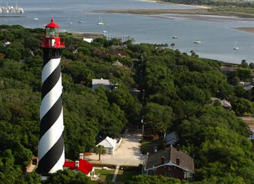
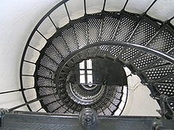

81 Lighthouse Avenue
St. Augustine, Florida 32080 Contact Us! Panda Travel Agency, 555-905-1982, info@pandatravel.org
 
Why Should You Come Here?
Well there's so much to do here at the Saint Augustine Lighthouse and many things to do in this area so you'll never be bored! There are many tours and and unforgettable experiences you can have here! If you love learning about ghosts, history, and paranormal experiences then this is definitely the place for you!
Some tours that you can take when you come here!
The Dark of the Moon Paranormal Experience: This is the only ghost tour that lets you go inside of the lighthouse at night! This tour lets you investigate the most haunted place in St. Augustine Florida. During this tour you can conduct your own paranormal experience!
The Behind the Scenes Tour: This tour lets you step back in time on a guided tour of the Lighthouse history and more!
Some things you can do in the area while you visit:
Maritime Museum
Wrecked! Exhibit
Anastasia State Park
Fort Matanzas National Monument
St. Augustine Alligator Farm Zoological Park
St. Augustine Pirate & Treasure Museum and so much more!
The St. Augustine Lighthouse has an average 4.6 rating and people love it!
Matt Sampers: This place is amazing! Tons of history here. You can go in this lighthouse actually go up to the top! Make sure you try and read all the stories and history, there is so much to soak in from this place! The entrance fee for the lighthouse also includes the living house. This whole place is one big museum. Fun for all ages, a must for visiting St. Augustine!
Jamie Beu: 219 scary steps, but the climb is worth the view. The keeper's house has great exhibits for kids and adults. And the tour guide did a great job of explaining maritime archeology. There is also a playground and a nature trail as well.
Gail B: Awesome experience! We loved the platforms at strategic places up the stairs for rest and some lighthouse trivia!! Great facility! Don't miss it even if you have already been up a lighthouse. They're all different in their own way.